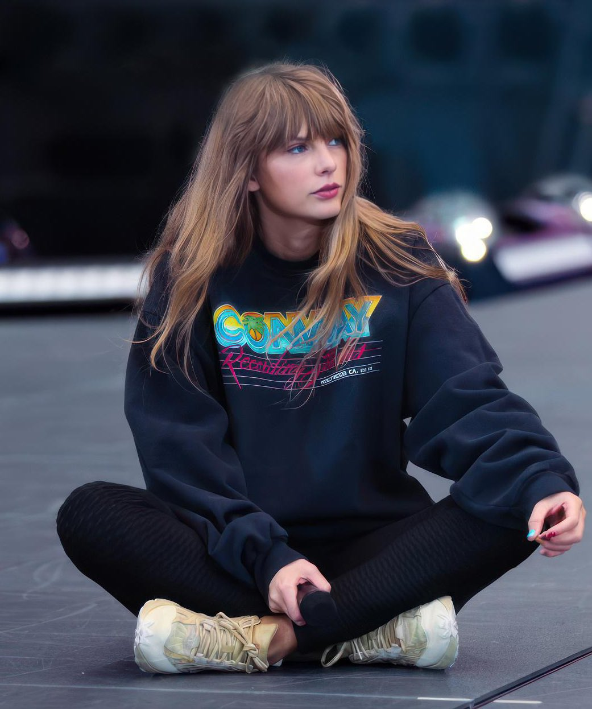
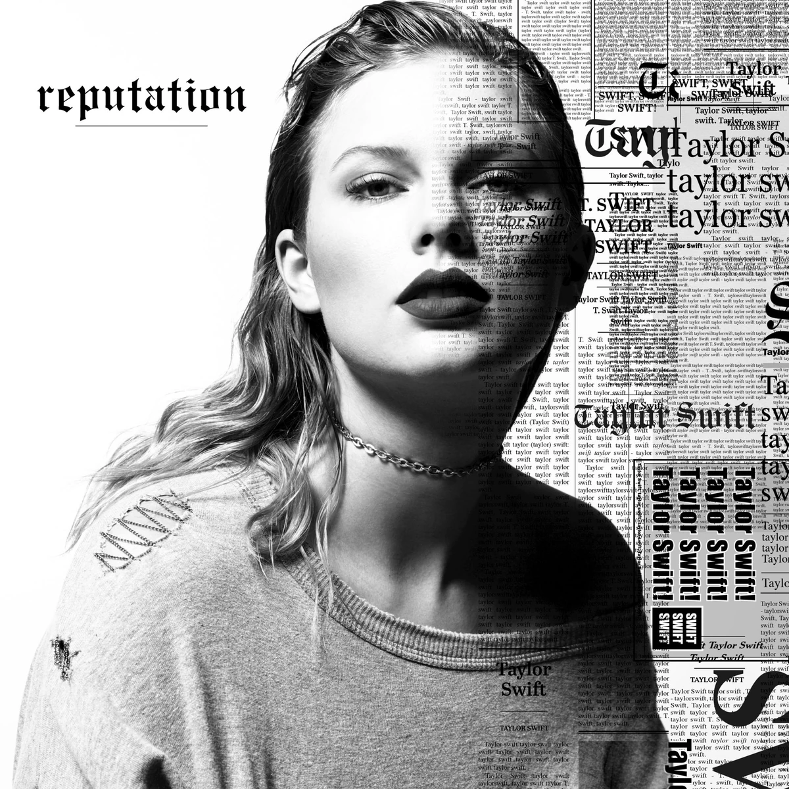
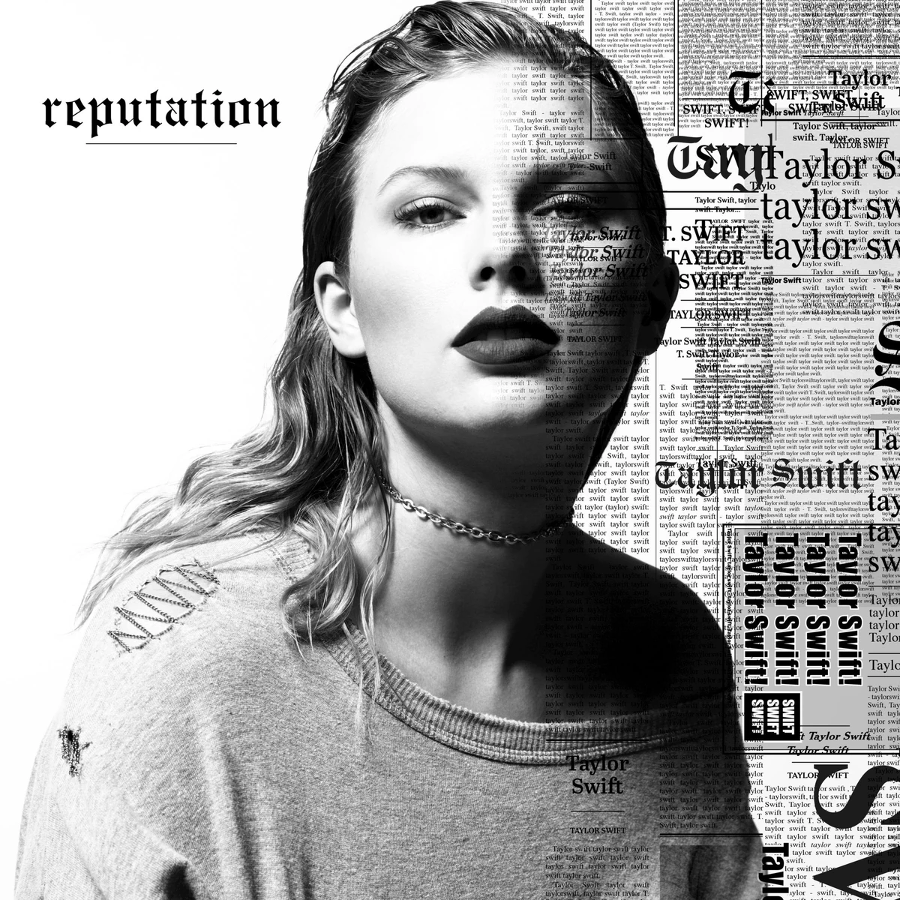
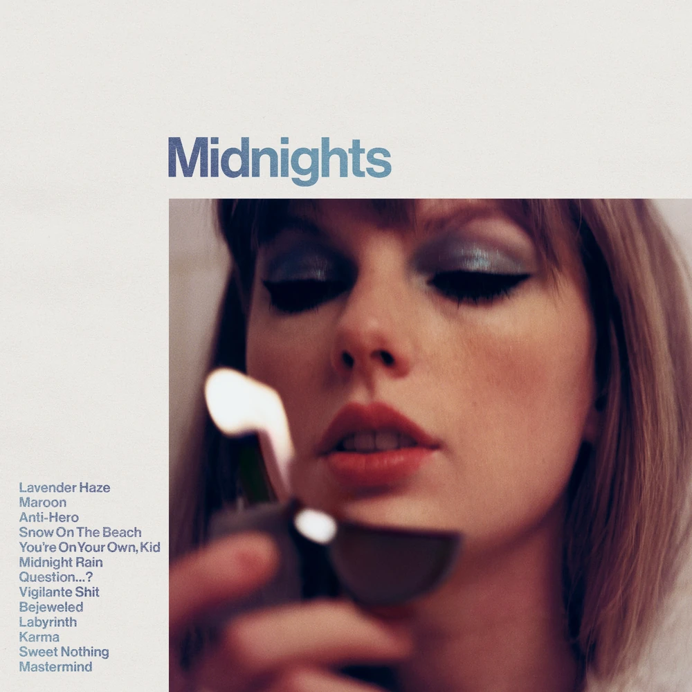
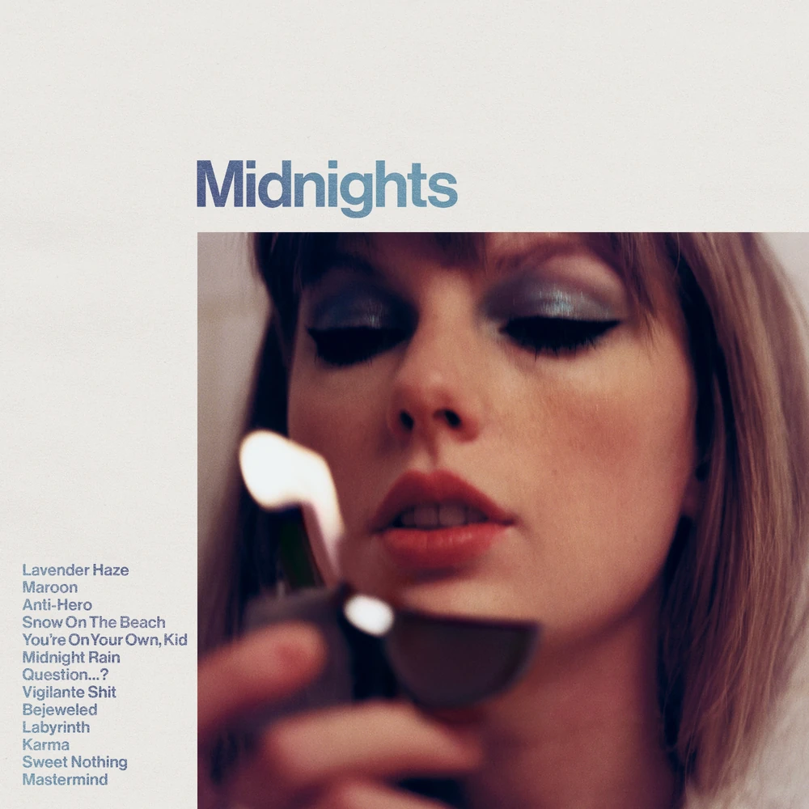

| 05/27 East Rutherford, NJ. MetLife Stadium | |
| 06/02 Chicago, IL. Soldier Field | |
| 06/03 Chicago, IL. Solider Field | |
| 06/10 Detroit, MI. Ford Field | |
| 04/15 Tampa, FL. Raymond James Stadium | 06/17 Pittsburgh, PA. Acrisure Stadium |
| 04/22 Houston, TX. NRG Stadium | 06/24 Minneapolis, MN. U.S. Bank Stadium |
| 04/28 Atlanta, GA. Mercedes-Benz Stadium | 07/01 Cincinnati, OH. Paycor Stadium |
| 04/29 Atlanta, GA. Mercedes-Benz Stadium | 07/08 Kansas City, MO. GEHA Field at Arrowhead Stadium |
| 05/06 Nashville, TN. Nissan Stadium | 07/15 Denver, CO. Empower Field at Mile High |
| 05/12 Philadelphia, PA. Lincoln Financial Field | 07/22 Seattle, WA. Lumen Field |
| 05/13 Philadelphia, PA. Lincoln Financial Field | 07/29 Santa Clara, CA. Levi's Stadium |
| 05/19 Foxborough, MA. Gillette Stadium | 08/04 Los Angeles, CA. SoFi Stadium |
| 05/20 Foxborough, MA. Gillette Stadium | 08/05 Los Angeles, CA. SoFi Stadium |
| 05/26 East Rutherford, NJ. MetLife Stadium |
 

_-_Portada.jpg) 
